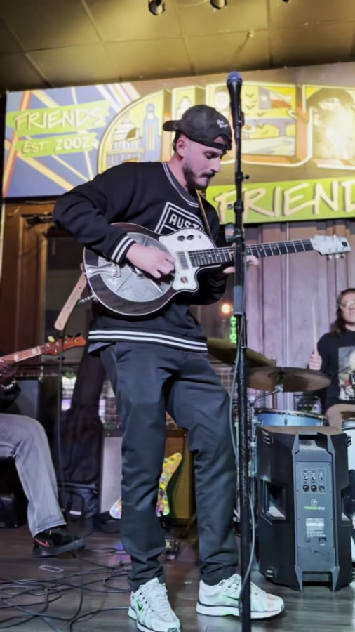
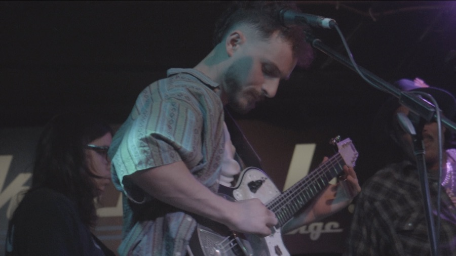
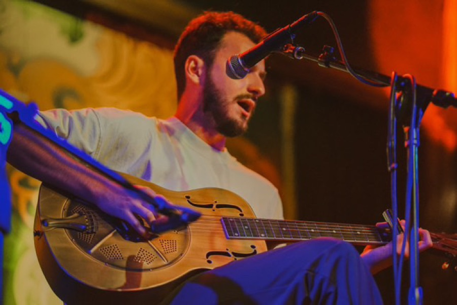
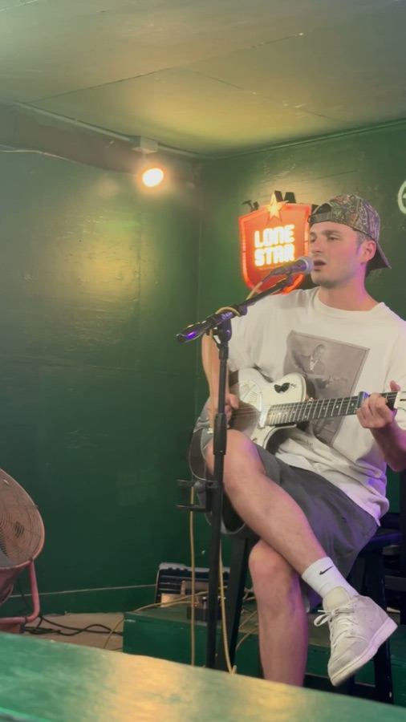

A
ALLIGATOR
LEATHER BLUES NECK BARHAM
LEATHER BLUES NECK BARHAM
☞ RAISING THE GHOSTS OF THE BLUES ☜
TRAP BLUES · DEEP DELTA · ON A MODERN BEAT
AUSTIN, TEXAS
☞ THE STANDING GIG ☜ THURSDAYS AT THE DIZZY ROOSTER 6TH STREET, AUSTIN · REQUESTS WELCOME
☞ NECK BARHAM MAKES THE RECORDS · THE HEADS PLAY 'EM LOUD ☜
The hard, deep delta blues carried on a trap beat — old ghosts pulled up into a modern room. On record it's the fusion; live, the Heads plug it in and play it loud, cranked, and dirty.
☞ EVERY THURSDAY AT THE DIZZY ROOSTER · REQUESTS WELCOME · DANCING TIL THE LAW SAYS STOP · BRING YOUR OWN GHOST · THE MANAGEMENT IS NOT RESPONSIBLE FOR WHAT THE MUSIC RAISES ☜
These are the ghosts Neck raises. Cut into wax, pressed in shellac, and played on a spring you had to wind — it never sounded clean, and that surface noise is half the haunting. The beat comes later.
No music file, no download — the hiss is generated in your browser, the way a worn 78 sounds with nothing in the groove.
Why it hisses: Paramount, who pressed most of what's on this page, was a side business of a Wisconsin chair company. They mixed their shellac cheap and pressed it thin. That sandstorm behind Charley Patton isn't age — a lot of it was there the day the record was new.
What's been cut so far. His latest single, Alligator Leather Blues, is out now — spin the player for the records, then dig through the sides below.
The ghosts, by name. Three men, one rope — the deep delta sound Neck pulls forward onto the beat. Turn a card over for the notes.
THE TEXAS END OF THE ROPE
NECK'S NOTES: He is the reason a man alone with a guitar got recorded at all. Before Lemon sold, the labels wanted a woman out front and a band behind her. He proved one voice and six strings could move records, and every scout in the South went looking for the next one. Listen to the time: he stretches a bar because the line isn't finished. That isn't sloppy playing — that's a singer who never had to fit a drummer.
THE FATHER OF THE DELTA BLUES
NECK'S NOTES: The showman. Played the guitar behind his head and between his knees eighty years before anybody made a career of it, and beat on the body while he did it because he was one man doing the job of a rhythm section. That hoarse shout of his goes straight into Wolf and out the other side into rock and roll. If you only ever learn one thing off these records, learn that the guitar is a drum first.
PATTON'S STUDENT, IN PERSON
NECK'S NOTES: People file Wolf under Chicago and stop there. Wrong end of the story. He was twenty years old standing in front of Charley Patton, and he carried that man's repertoire north in his hands. When you hear that band stomp on one chord and refuse to move — that's Dockery, plugged in.
THE ROPE: Lemon proves the solo bluesman sells (1926) → the scouts comb the South → Patton is found and recorded (1929) → Patton teaches Burnett at Dockery → Burnett becomes Wolf and takes it to Chicago (1952) → everything you have ever heard on a radio.
Pull a year. Everything on this page happened between the first blues in print and the day the record industry stopped.
images/neck.jpg
☞ NECK BARHAM ☜
Neck Barham plays Trap Blues.
The hard, deep delta blues sound with a trap-beat undertone running under it — the old country blues and a modern low end in the same room at the same time. Not a museum piece and not a novelty: the ghosts on this page, pulled up onto a beat you feel in your chest.
“Trap Blues enhances the hard and deep delta blues sound with a trap beat undertone. My mission is to use the modern attraction of trap music to resurrect the ghosts of the blues.” — Neck Barham
The delta half is real study — ask him about a side and you get the label, the session, and who else was in the room. That's where the lineage comes from. The trap half is what carries it to whoever's standing in the room tonight.
Out of Austin, Texas. On record, that's Neck Barham. Live, it's THE HEADS — the band that plays it loud.
Neck out front, the Heads behind him. The records are the fusion — the stage is where it gets loud.
On record it's Trap Blues. Plug it into a room and it's THE HEADS.
Take the deep delta blues Neck carries, run it through a cranked amp and a fuzz you feel in the floor, and you get the live show: loud, dirty, and closer to the ghost than clean ever gets. Same songs, a great deal more volume.
One dirty chord, built in your browser — no file, just a hot amp and a fuzz box. The victrola's quiet; this isn't. Mind the volume.




☞ FROM THE FLOOR — NECK BARHAM & THE HEADS, LIVE ☜
He holds down a weekly Thursday at the Dizzy Rooster on 6th — that's the standing one. Anything else with the volume up lands here.
| DATE | TOWN | HALL | |
|---|---|---|---|
| EVERY THURSDAY |
Austin, TX | The Dizzy Rooster 6th Street · weekly residency |
SONG MENU |
Can't make it out on a Thursday? There's an after-hours Dizzy Rooster in the Frost Lounge — walk in and the band's on the stage.
Juke joints, halls, back rooms, festivals — anywhere with a stage and a socket that can take an amp turned all the way up.
Swap this for Neck's real address — search this file for booking@.
No accounts wired up yet — put real URLs on the chips in this section and each one appears.
Paper letters, if he had his way. Email as a compromise.
Bring him a 78 he hasn't heard and he will tell you what it is, who cut it, and roughly what you overpaid for it.